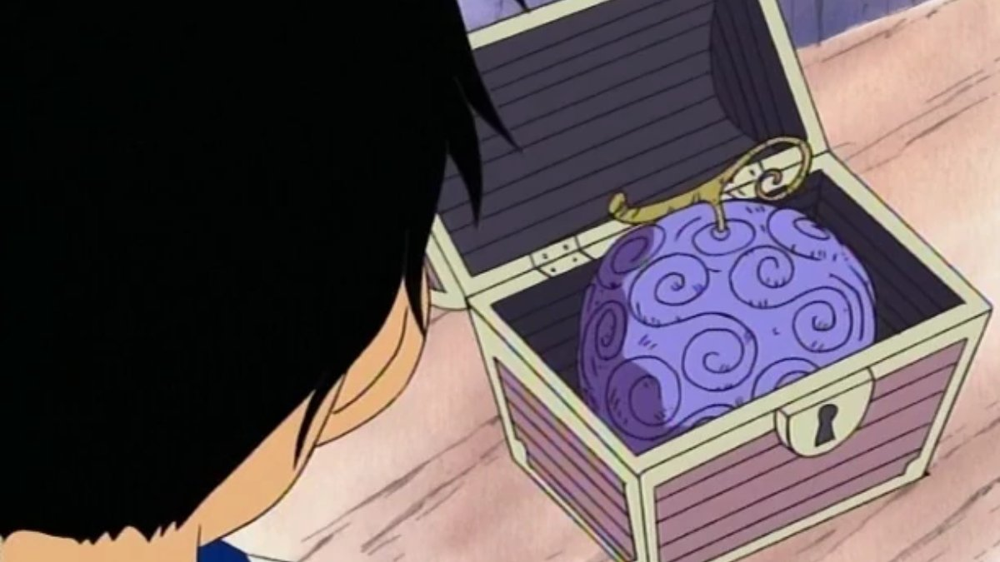
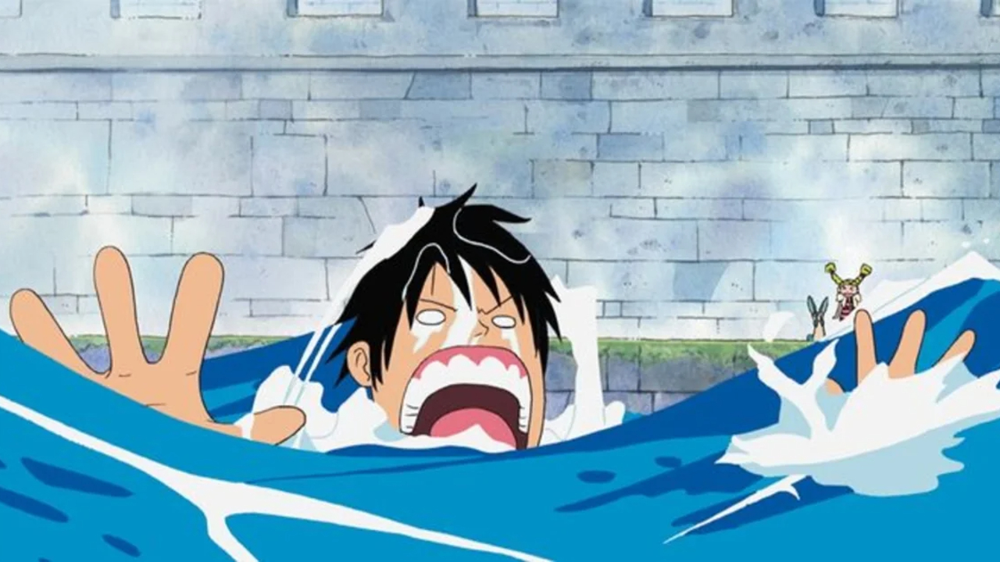
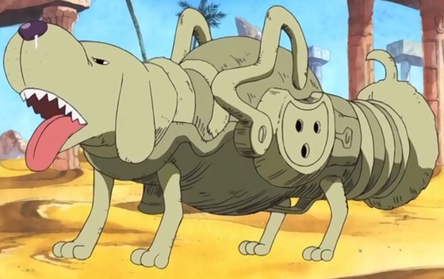
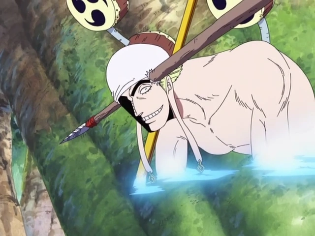

¿Qué es una Fruta del Diablo?
Una fruta que te otorga habilidades misteriosas si la muerdes. Cómo crece y cómo se cosecha es un misterio, pero quienes lo comen obtienen poderes sobrenaturales y son conocidos como "regalos". El público en general teme a las personas con habilidades como personas con capacidades extraordinarias. Por otro lado, debido a sus terroríficos efectos, su fruto puede comercializarse por nada menos que 100 millones de bayas cada uno. Los poderes obtenidos de las frutas del diablo varían según la fruta que se come, y dos frutas con las mismas habilidades no aparecerán al mismo tiempo. Además, de un solo fruto no pueden nacer varias personas con habilidades.
Debilidad de las Frutas del Diablo
La debilidad más notable es que los consumidores de frutas del diablo pierden la capacidad de nadar. El agua de mar, así como cualquier gran masa de agua (como ríos o lagos), les quita sus fuerzas y los hace incapaces de moverse. Si caen al agua, los usuarios de frutas del diablo se hunden como si fueran de plomo y necesitan ser rescatados por otros.
Investigación sobre Frutas del Diablo
El origen de las frutas del diablo sigue siendo un misterio en el mundo de One Piece. Se sabe poco sobre cómo se crean y cómo aparecen en el mundo. Las frutas del diablo son extremadamente raras y valiosas. Cada fruta es única y concede un poder específico, sin que existan dos frutas idénticas en poder. El científico Caesar Clown ha creado frutas del diablo artificiales llamadas SMILES, que permiten a los animales (y humanos) obtener habilidades Zoan. Sin embargo, estas frutas son imperfectas y a menudo tienen efectos secundarios no deseados.
Clasificación de los tipos de Frutas del diablo
Las frutas del diablo se clasifican en tres tipos según sus efectos
Paramecia
Confiere habilidades físicas o de transformación a su usuario.

Zoan
Permite al usuario transformarse en un animal específico o en una forma híbrida entre humano y animal.

Logia
Otorga al usuario la capacidad de convertirse en un elemento natural y manipularlo.
